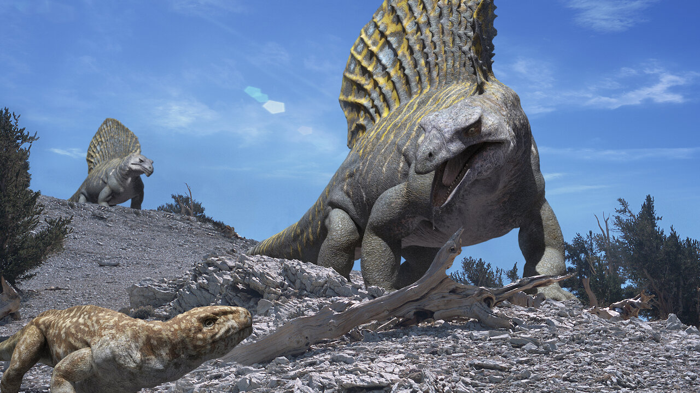
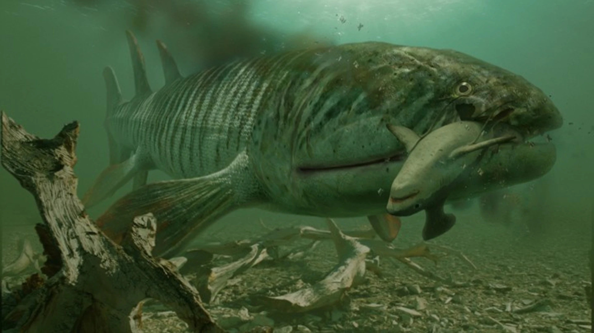
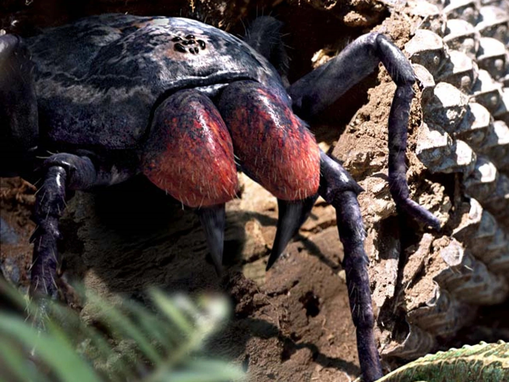
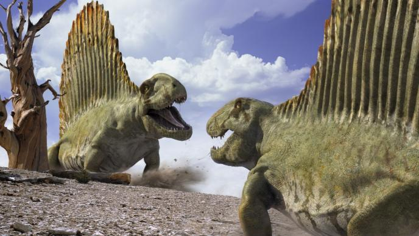
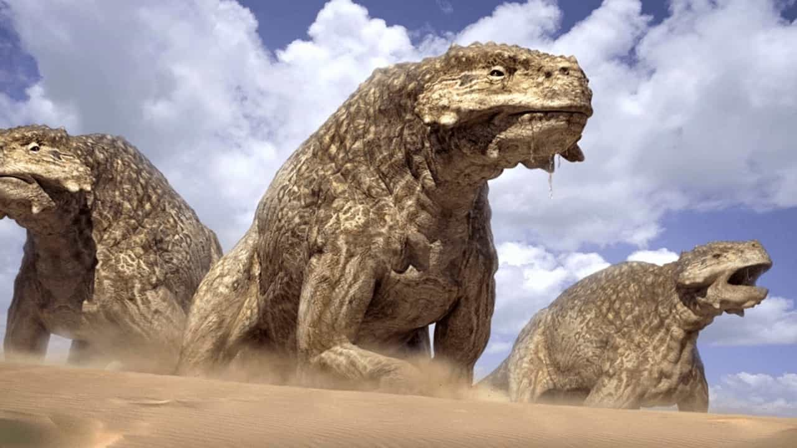
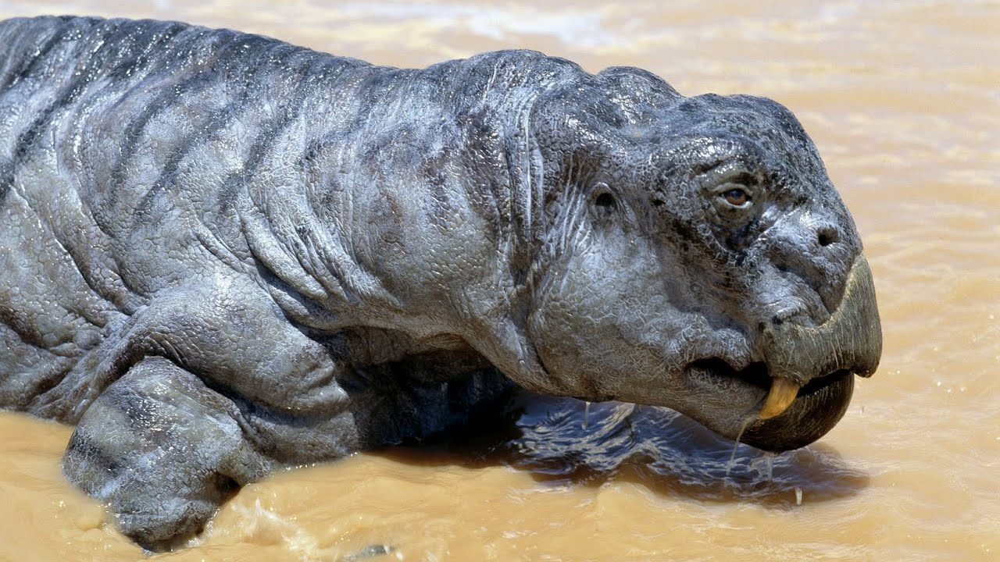
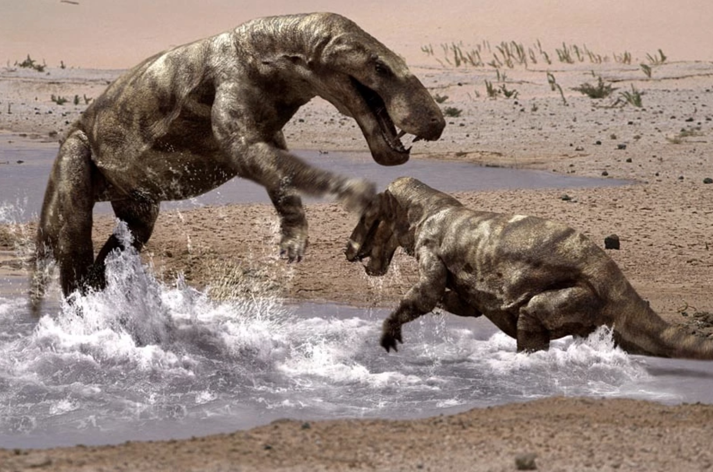

Walking With Monsters
After the roaring success of WWD, and the slightly less success of WWB, the BBC were eager to produce more Walking With…
And they did, with 2003’s Walking With Cavemen. But this is not the story of that pathetic excuse for television. Instead, they decided to reject imitating that lame and dry piece of rage-bait cosplaying, in favour of producing an action-packed miniseries, charting the evolution of…well…us through the hazardous climate and creatures we faced.

Promotional shot from Walking with Monsters (BBC, 2005) like all images in this article unless expressed otherwise of the mammal-like reptile Edaphosaurus. Despite appearances, this beast is an extremely close relative to us. The smoking gun? The single small hole in his skull is pretty much all we need to determine his ancestry and close links to us. This creature is exemplary of the human evolution storyline this series tracks.
This completes the ‘Trilogy of Life’, featuring the two series I have already ranked, who shared the same producers and visual style. The final budget for these three series total over £15M, a sum you could hardly believe the BBC coughing up for explicitly educational material.
“An epic war for our world, a war between monsters!”
Kenneth Branagh, 2005Water Dwellers
VISUALS: 7
One theme we will find is that each episode’s score often has to be an average of the sub-scores of each segment. This is because of the unique organisation of the WWM episodes. Whilst WWD and WWB track a single ecosystem, this programme splits each episode into multiple ecosystems, instead aiming to follow the evolutionary progress of one animal.
Here, the Cambrian period is not the explosion (pls appreciate my reference) of colour and life you would expect. It feels empty and lacking the weirdness you would expect (where are Opabinia and Wiwaxia). For the evolutionary frag grenade this period represented, a few Anomalocaris clashing are all we get.
And yet the Silurian embodies that very same emptiness, but here that is an advantage. Whilst the Silurian seas are filled with sea scorpions and early fishes, the land is dystopian. Lake Powell is a perfect location, here.
The Devonian similarly looks strong, but the quality of creatures in the bright sunlight looks worse. We have a small issue in WWM of animals posing for the camera a little, as there isn’t enough time to give them a plotline to chew on, and this is proven with Hyperpeton.
STORYTELLING: 8
One benefit here is it highlights the awful plotting in Next of Kin, and that pleases me. This series’ sidetracks into evolutionary history, often with some awkward fleshy part incredibly zoomed in on, externalise the thematic debt of the episode to the meaning behind the survival of the fittest. It provides real adaptations, showing us how our beings came into existence, and most importantly, contrasts this with the anthropods, our evolutionary enemies.

The lobe-finned fish Hyneria eating the iron-board shark Stethacanthus. It is from these lobe-finned fish that fish were able to make the leap onto land via turning those four strong flippers into little legs. Hyneria lived at the same time as another Devonian superpredator, Dunkleosteus. Dunkleosteus, however, is the more famous of the two, perhaps due to its unique teeth structure (i.e. their bones are their teeth).
The final chunk, when we have survived the sea and conquered the arthropods (symbolically presented by a little scorpion snacked on by our ancestor), feels like it is tagged on, and drags on a little with some big fish stopping mating or something. Ultimately, it serves to show why the water is so dangerous, and how the path forward for us is on land.
Until a shock twist at the end so well plotted, it’s remarkable nature even came up with it herself.
“But as they move inland, they’ll face an ancient enemy. More deadly than ever before. The arthropods are back!”
Kenneth Branagh, 2001One major downside is that the individual ecosystems can feel hollow, and like the animals are just evolutionary chess pieces rather. Yet this problem goes away as the series focuses a little less on grand natural selection narratives.
AMBIENCE: 4
The ambience of the Cambrian is just non-existent. This episode is almost entirely carried by the Silurian section, with the superb migration score. Shoutout to the Gaia/Theia intro, too.
CREATURES: 7
The creature score, despite a strong roster, is harmed by the inconsistency of the ecosystems. It can sometimes feel like a creature feature not a nature documentary. Additionally, the fishes and the Anomalocaris do look a little off, which is understandable as their designs are alien to us. The GOAT Pterygotus is terrific, but barely features. The main focusses are the best in the episode: the Megalograptus and Cephalaspis have plenty of personality in this slightly unforgettable cast.
Reptile’s Beginnings
VISUALS: 8
It’s a tale of two halves yet again here. The Carboniferous should look better than this, sadly, in long-shots. I attribute this to the fake-looking smoke effect that was CGI’d in. Our Pennsylvanian (I apologise deeply for using this term. I needed a synonym. This is like measuring your marathon in furlongs. I’m sorry.) protagonist Mesothelae unfortunately is the worst looking main character in all of the Trilogy of Life, which is sad because the creatures in the Carboniferous are otherwise a delight.

Mesothelae, the giant spider pictured here, has really made me grumpy in the past. Firstly, this is not a member of the Mesothelae family. There is no Mesothelae. There never has been. This is intended to be the creature called Megarachne. When scientists first discovered what looked like the biggest spider to have ever lived, they obviously were excited. Indeed, a look at the fossil reveals a remarkable resemblance to this image above. There were many above average sized spiders in this period, but Megarachne is not one of them. One museum I went to in Cambridge had learned of this spider, and comissioned a life-sized model to wow their visitors with. When it was revealed Megarachne was instead a standard size sea scorpion, the museum instead decided to keep the model, present this scorpion as a spider, and only at the very bottom of a very small paragraph reveal that actually this mega spider isn't real, which is a bit sneaky to me.
The early Permian, contrastingly, is superb. Everything here is shot perfectly, except for the offputting scene of Dimetrodon flinging dung, with the kind of speed and intensity you’d want for such an action-packed segment. Dimetrodon is peak. The little Dimetrodon, however, are just downscaled adults. This is a common problem on Walking With…, but it is especially pronounced here by the tiny head and excess detail on their torsos. Babies ought to be cute, even if they are the dental demons Dimetrodon. This ecosystem is the greatest in the show full stop.
STORYTELLING: 8
It continues the path of amphibians to egg-layers to mammal-like reptiles, which is the path of us. Even Dimetrodon highlights, correctly, how our teeth have evolved. Whilst it has this evolutionary narrative, the individual mini stories themselves are more than worthy of WWD, and are given plenty of time to develop. This episode combines that overarching narrative that worked so well in the previous episode with a fully fledged environment for us to explore. Our focus on Mesothelae harms the thematic development of the episode by giving Petrolacosaurus, who we really ought to be following as he is our ancestor, relatively little to do.
We must here talk about the foremost advantage that Walking with Monsters has over its predecessors: action. Yes, looking at prehistory should be about the pursuit of knowledge, panoramic shots, and complex animal behaviours. But it should also be entertaining, and that means fights and chases. And boy, does this episode have fights and chases. The series finally fulfils its name and has barbaric monsters scrapping it out to see who comes out on top and chasing down their prey in deadly blood baths. This episode is WWM embodied.

The protagonist of many action-packed moments is this fearsome Dimetrodon. It is disappointing that such brilliant killers are often reserved to the role of fat, slow, water-dwelling dinosaurs, when we ought to be taking pride in our close relative's awesome power.
AMBIENCE: 5
If an episode has chases and fights, it’s probably a good thing for the soundtrack. The highs of the Permian soundtrack account for the middling Carboniferous. Additionally, both ecosystems have a strong identity and soundscape.
CREATURES: 9
Meganeura, Proterogyrinus, Petrolacosaurus, Arthropleura, Mesothelae. That’s a hell of a range for a 15m segment, considering they all have at least one scene of doing something. Indeed the big problem with this segment is this focus being divided amongst all these animals, but that's certainly not hurting the score at all here. The Permian is significantly lighter on the ground, but that is made up for by the iconicity of the Dimetrodon appearance. They are beautiful beasts, with their unique locomotive system on full display here. I need to write more about Dimetrodons in the future.
Clash of Titans
VISUALS: 7
It’s times like these where I am tempted to look back at the very first Walking With… episode, New Dawn, and see how far we’ve come.
But I’m sad so instead I study how the dust effect affects CGI quality, and they smashed it out of the park here. Weirdly, the opening chase is poor, reusing shots, yet the late Permian is exactly what I’d want for this period, especially the overly dramatic long-shots.

Exemplary of the superlative dust this episode has. I've always thought of the Scutosaurus as a parareptile, but supposedly it's a pure reptile. The boundaries of groups are tested in the Permian, as they will only harden far later, in the Jurassic. The Jurassic, thanks to the Permian extinction's deep effects, proved the perfect testing ground for new groups, and we find most of the key animal groups from today have their origins here.
The Triassic looks a little worse, again exemplifying the vast spread between halves of these episodes. Whilst I assumed we’d solved the dust problems, they come back in this episode with the Lystrosaurus herds. It’s difficult to reconcile this environment with the one we see in New Dawn, but the real problem here is the animatronics. The same crocodile head and Lystrosaurus head are reused so many times and they aren’t even that strong to begin with. It's a very odd sequence.

The passable Lystrosaurus animatronic that is used over and over again. For a creature that is known to have been absurdly populous, it is ironic only one model is used.
STORYTELLING: 6
I have praised the single evolutionary narrative this series attempts to portray, and while we were going a little off-track last episode, now we have derailed. We do not rerail this episode.
Firstly, the Gorgonopsids, the creature next in the branch we’re following, die out. We have broken that continuous line, and the episode hurts from this shift. So we cut mid-episode to the Diictodon. Luckily, these ‘hardy survivors’ are given plenty to do in the script, and their evolutionary upgrade is an incredibly deep-cut reference to ear bones, which I adore. But our new investment in this pseudo-mammalian line is immediately broken when they pivot to the Lystrosaurus, who then die out themselves! We pivot again to the Euparkeria. His hip joints are nice and all, but the focus is clearly on the Lystrosaurus, undermining the eventual ending. What happened to our ancestral line then? How is the reptile turning straight into an Allosaurus? What about Coelophysis? Oh wait, they then show Coelophysis footage, BUT THEN DIRECTLY CUT TO THE TIME OF TITANS BECAUSE WE NEED TO EXPLOIT THAT EPISODE SOME MORE. WASN’T BIG AL ENOUGH FOR YOU PEOPLE!
Furthermore, why are we showcasing the crocodilian beginnings? This will pay precisely zero dividends in future installments.
What I appreciate in this episode is the writing for the late Permian period. This can best be seen with the Rhinesuchus, which checks back in with the amphibians we once were. The poor guy is stranded in the last pond in the area, and is eventually eaten alive whilst in his torpid state, symbolising the amphibian’s growing irrelevance to the upper echelons of Earth’s animals.
AMBIENCE: 5
The late Permian theme is the best in any film or television show. It is an absolute crime this hasn’t been released given how well it demonstrates the desolate nature of the Permian extinction. I’m baffled when other paleomedia try to present this place as anywhere near lush. You get a proper three-part arc here, starting with the lushness of the Carboniferous and slow drying out, until you get an atmosphere that feels hostile and oppressive. Even the Jurassic gets its own Crossing the River theme, which is actually quite good.
CREATURES: 7
I love Gorgonopsids.

It's not hard to see why the superbly named Gorgonopsids carry this episode. Inostrancevia is the assumed name for this specific species.
I mean what can I say about him. He’s ominous and imposing. He looks dangerous, unlike that odd depiction in Life on Our Planet that makes him into a puppy. Diictodon and the Gorgo play off each other well. All the other animals lack depth, unfortunately, and the Jurassic section is particularly forgettable.
| Episode | Visuals | Storytelling | Ambience | Creatures | Total |
|---|---|---|---|---|---|
| Water Dwellers | 7 | 8 | 4 | 7 | 26 |
| Reptile’s Beginnings | 8 | 8 | 5 | 9 | 30 |
| Clash of Titans | 7 | 5 | 5 | 6 | 23 |
This series, spoiler alert, scores very highly on average. The soundtrack, tragically, is unlikely to be uploaded ever in a high quality form, due to the passing of the composer, but the ambience score here is the highest in the series.
I have a special fondness for monsters. I tend to prefer media which strive to be ‘epic’ in any sense of the word, as opposed to those which stay within their means, and this includes WWM. A special mention must go to the sheer variety of creatures here, the largest of any series in the Trilogy of Life.
For a full final ranking, this link provides it <INSERT LINK FOR WWRANKING.HTML> here.
TL;DR
Man really, really likes evolution and thinks this stuff should be general knowledge amongst the population. His captions are also getting longer by the day.